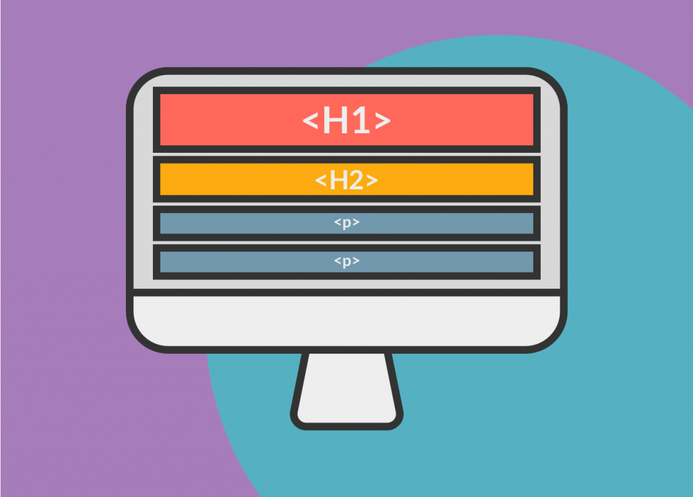

PSEUDO CLASES
Las pseudo-clases en CSS3 permiten aplicar estilos a elementos en estados específicos, como
cuando un enlace es activado, se encuentra en el estado de foco, o al pasar el cursor sobre él.

hover:
Cambia el estilo cuando el cursor se sitúa sobre el elemento.
active:
Cambia el estilo cuando el elemento está activo.
focus:
Cambia el estilo cuando el elemento obtiene el foco.
first-child:
Selecciona el primer hijo de un elemento.
nth-child(n):
Selecciona el enésimo hijo de un elemento.
nth-of-type(n):
Selecciona el enésimo hijo del mismo tipo de un elemento.
not(selector):
Selecciona elementos que no cumplen con el selector especificado.
last-child:
Selecciona el último hijo de un elemento.
nth-last-child(n):
Selecciona el enésimo hijo desde el final de un elemento.
nth-last-of-type(n):
Selecciona el enésimo hijo desde el final del mismo tipo de un elemento.
INICIO